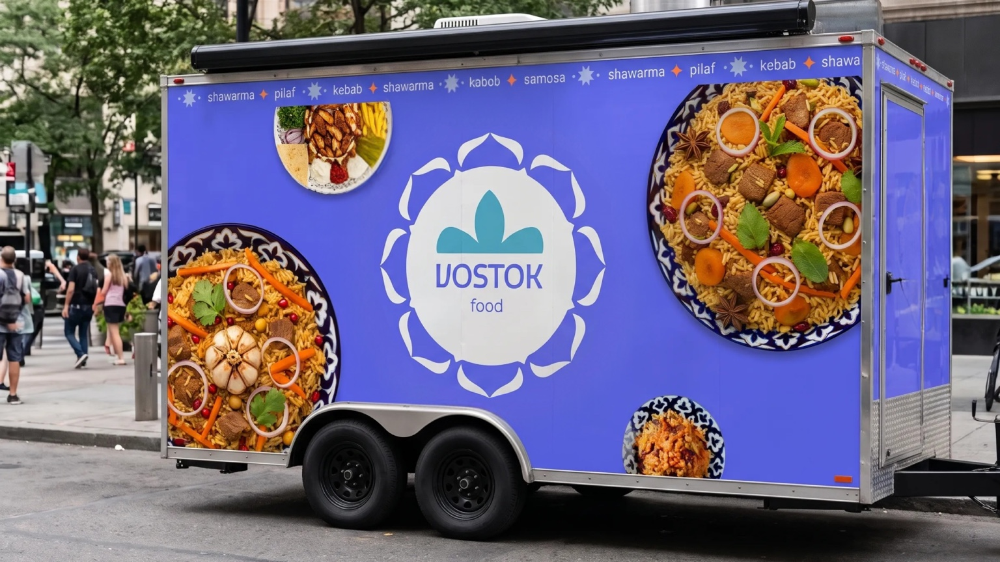
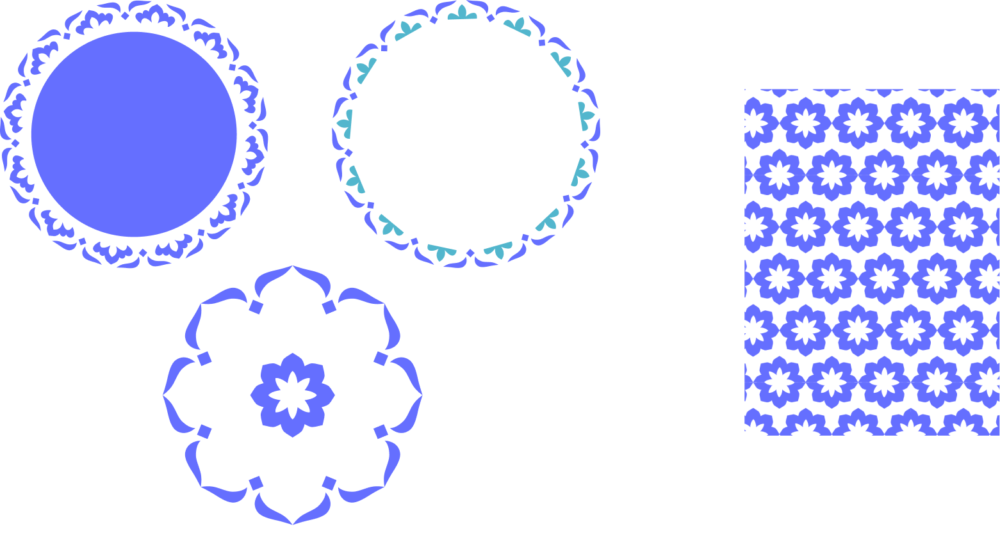
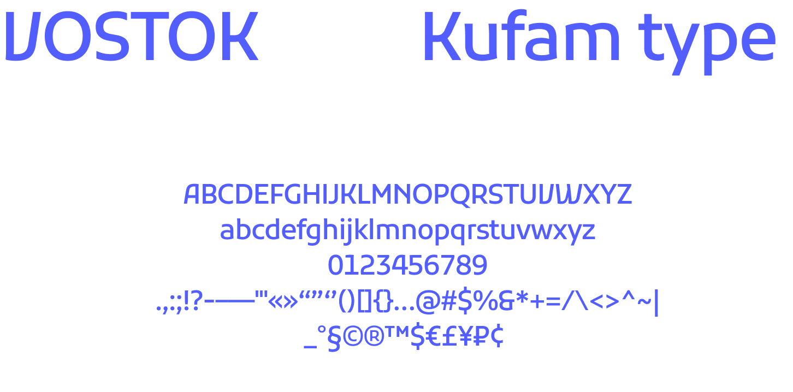
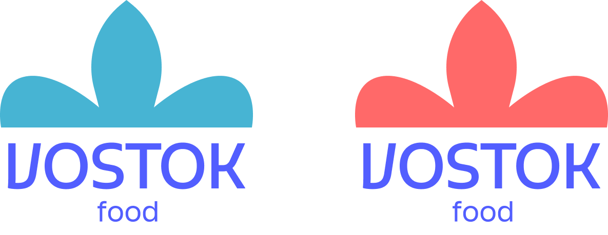
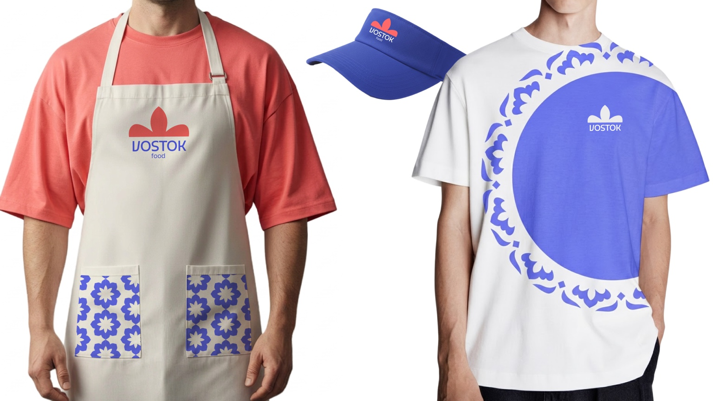
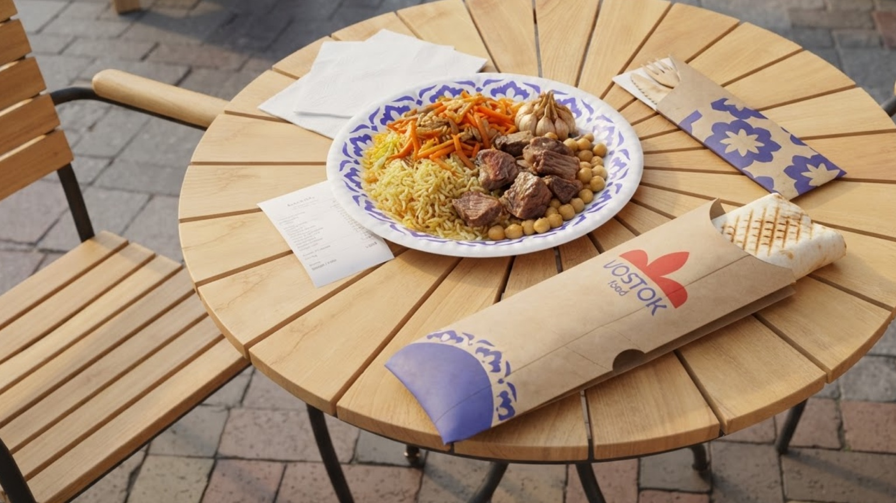
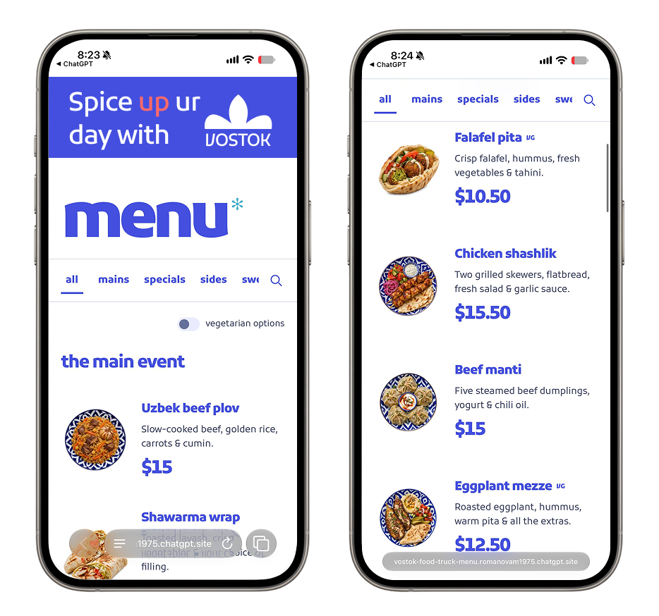

Кто покупает
Молодая аудитория
18–35 летМужчины и женщины — целевая аудитория VOSTOK.
В опросе российских потребителей интерес к шаурме снижался с возрастом.

Аудитория и задача бренда
Молодая аудитория — с акцентом на приезжих из стран СНГ.
Кто покупает
Мужчины и женщины — целевая аудитория VOSTOK.
В опросе российских потребителей интерес к шаурме снижался с возрастом.
Привычная еда
34%Опрошенных назвали шаурму среди часто заказываемых блюд фастфуда.
63% миллениалов
23% зумеров
Состав любителей фастфуда в выборке российского опроса 2025 года.
Контекст за рубежом
650 тыс. +По оценке на июль 2024 года, столько уехавших из России после февраля 2022 года оставались за рубежом.
Идея VOSTOK — предложить переехавшим знакомую повседневную еду в новой городской среде.
Задача айдентики
Транслитерация «Восток» — узнаваемая отсылка для знакомых с русским языком.
Английские меню и коммуникация — понятное приглашение для местных.
Цель — создать заметный, узнаваемый бренд, который заинтересует обе аудитории.
Цвета и стилеобразующие элементы берём из восточной керамики и блюд, которые в этой керамике чаще всего случаются.



Современная и с восточным оттенком.






Заказчик хотел минимально тратиться на печать. Меню часто обновляется, поэтому решили сделать QR-код и мобильную версию.
